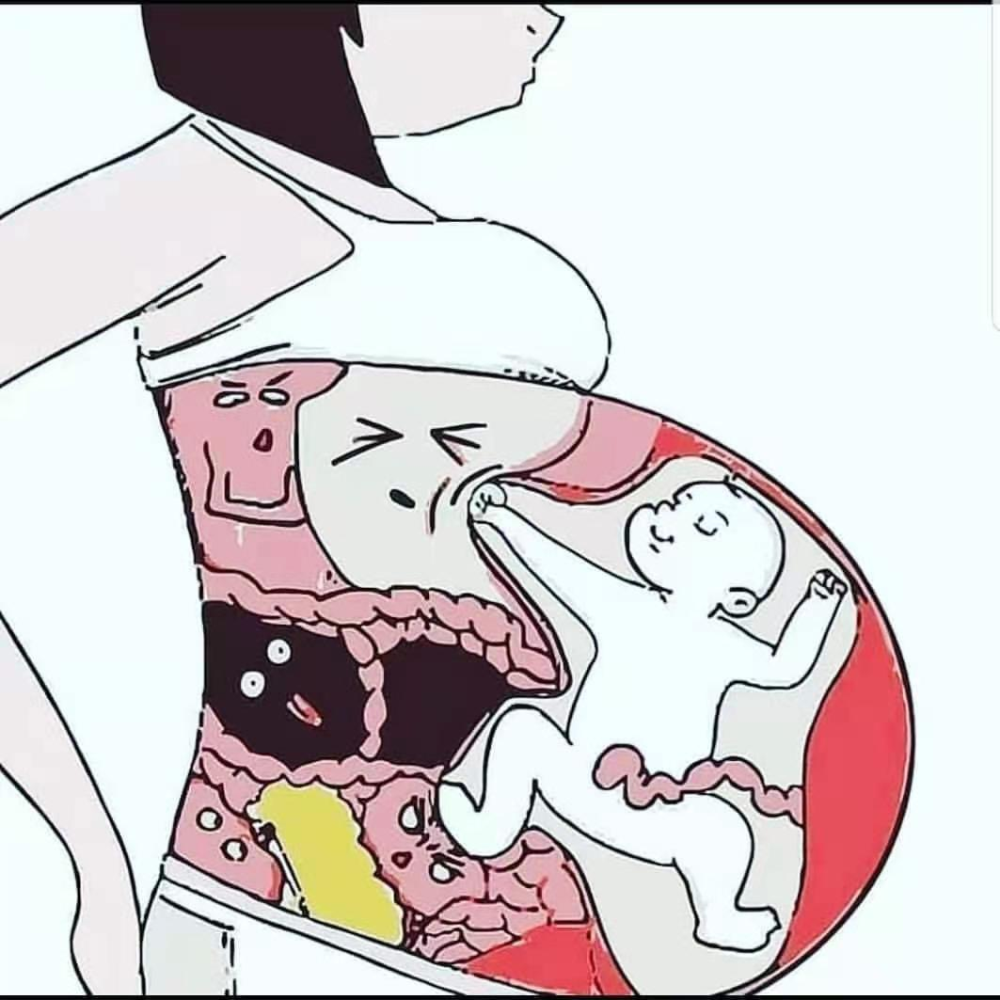

宝宝，我和妈妈都非常期待，你的到来！
这一年，我和圆圆有了自己的宝宝了，虽然起初还有点不太适应，但是慢慢地我们就进入了各自的状态。而从怀孕到生产的这个过程，圆圆都记录了下来。这里，我们不为谁来看，只为记录这一段难忘的记忆！
1. 妊娠反应的到来
怀孕初期的必经之路，包括孕吐等等反应！
我是 19 年末怀孕的，全家都满怀期待着宝宝的降临，自此我便正式开启了孕妈之旅。下面是我想到什么写什么，很多细节也没办法展开细说，也就是大致叙记录下孕期的经历和初为人母的艰辛与喜悦！

- 孕酮低
怀孕初期检查出来孕酮低。医生给开了孕酮让每天塞几次用于保胎，这让我十分担心，总怕因为孕酮低导致再生化，因为 3 月份时生化了一次，所以这次格外注意，每次到点去医院抽血化验 hcg 翻倍情况时都提心掉胆的。每次都抱着最坏的打算去的，每次拿到化验单都手抖，还好宝宝比较给力，翻倍正常，并且越来越好了！比心……哈哈……
- 亚甲减
另外一个问题就是甲减，医生说甲减也会影响胚胎发育，而且开始真心不好拿捏药量，从最初值很高，医生要求 7 天抽一次血，按结果调整药量。到后来 2 周抽一次血，再到 1 个月抽一次，自此到生产都基本稳定在每月抽一次，药量也从 2.5 片，2 片，1.5 片，1 片这样慢慢降了下来，现在整理发现光甲功的化验单，都很厚一打了！想想每次按着胳膊 10 分钟血还是往外流的日子，心酸……一度怀疑自己凝血有问题？
- 孕吐
慢慢的日子一天天小心翼翼的过去了，产检一切顺利，记得第一次 B 超单上写着看到胎心时，激动的我都想哭……感觉好神奇！随着宝宝在肚子里一天天长大，我开始孕吐了。记得刚开始是恶心，不想吃东西，看到什么都恶心！就可以喝点开水冲鸡蛋！吃点水果，或者是啃白馒头，总之就是白拉拉没有啥味道的东西可以吃。
想想前三个月主要是靠水果活过来的吧！每晚 2 点左右准时起床啃苹果，啃馒头，啃各种自己能咽下去的东西。当时老公说我就是大老鼠，半夜嘎咋嘎咋的……哈哈。我也很无奈，白天不想吃，晚上恶心难受必须吃点啥压压，不然烧胃到整夜整夜的睡不着。虽然孕吐反应大，不过真吐出来的也就两三次。一次是吃了婆婆做的菠菜面，饭后 10 分钟，全吐出来了，一点不剩。还记得鼻子里都是菠菜面条！第二次是我格外见不得虾相关的食物，包括不能在我面前说虾之类的话题，光听我都能听吐。有次老公煮了碗虾饺，他远远的做在桌子那头，我就看了一下，恶心的我就要吐，饭后去厕所回想起那碗虾饺，没忍住还是吐了！第三次是一次发烧导致的，记得发烧到已经喝水身体都排斥的地步！
2. 突如其来的发烧
怀孕期间生病对于母亲来说就是一场灾难，不能吃药基本就是硬抗！
孕期上班，一个同事说头疼发烧了，我和他说了几句话后，下午就感觉自己身体不太对了！果然可能是被传染了！这次生病里，印象最深应该是连烧 5 天未退，在医院吐的那个稀里哗啦呀。当时发烧的前几天是烧到 38 度多，从小打吊瓶的我，真心除了吊瓶没有能让我退烧的办法。
先去的高薪医院，医生让物理降温，毕怀孕不敢用药。那好吧，我就回家呢，物理降温 2 天无效，这 2 天白天好点就是感觉很热头疼，加上孕吐反应啥也不想吃！只能躺床上！晚上温度快飙 39 去，只能不停的擦身，贴了不知道多少降温贴，一夜基本不睡，降温贴都被蒸干了的感觉。
就这样实在受不了了，又去了人民医院，希望能有安全的方法退烧，实在太难受了，眼睛都是烫的，整个身体都是疼的。可是折腾一早，医生还是说没有到打吊瓶指标，巴拉巴拉……最后还是回家物理降温，冬天洗澡，擦身体……各种降温方法，然后当时体表温度下来，一会儿就回到 38 度多！我心想这样不行，我太了解自己了，于是又去了高薪医院，过程就不说了，结果是又被轰回来了。没办法，我当时夜里浑身难受，看着快 39 度，难受到有时都想放弃这个孩子，只想快点退烧，此时我已经将近 5 天 5 夜没有好好睡觉了，每天不到 2 小时睡眠还要忍受孕吐，同时一天除了喝点稀饭啥也吃不进去，尤其喝白开水，十分抵触，为了让自己喝水，用各种孕妇可以喝的东西调味，依旧喝不下去白水。
就这样第 6 天夜里 4 点我去上厕所，发现下面流血了，虽然不多，但是当时我的心咯噔一下。心想完了，孩子保不住了。此时孕 8 周整。我赶紧叫了婆婆和公公，然后开车去了人民医院急诊。夜里很冷，先去的后楼产科住院部看的医生，她检查了下说没有什么东西出来。让再去做 b 超确认下胎心之类的！于是从住院楼下去，走到门诊楼去做检查，每一步都感觉好难。门诊楼医生说憋尿 b 超让喝水，当时也没带杯子，公公就在自动贩卖机里买了果汁，把果汁倒了，去走廊尽头接了白开水给我，我很怕，身体很难受，几天的折腾我走路都需要我婆婆扶着！
当时我做在冰凉的凳子上，手里拿着公公给我接的白开水喝，其实每一口都想反胃，为了赶紧检查，我强忍着喝下去，到第二杯接来时，我刚喝了一半，实在忍不住了。不受控制的反胃恶心。我吐了……连着吐了 3 次才吧刚才喝的水全部吐在了医院的地板上，胃很空，一点食物残渣都没有，不知道的看到可能都会认为是谁怕了一地水，而不是吐的！呵呵……最后我婆婆过去和 B 超室说我发烧很严重难受的喝水都吐，还能做吗？医生可能也没办法了，就让我进去做了。事后我在想，能做为啥让我喝水。还白喝了……哈哈……结果是好的，孩子没事。
最后又走回住院楼给医生看结果，医生说可能是我发烧没有休息好，劳累过度导致轻微出血，说明天来挂号后，检查啥啥的，看能住院吗？具体说了啥不记得了，只知道折腾到快天亮还是回家了。第二天一早我们 3 人又来到医院检查，抽血等等又折腾了一上午，最后门诊医生说要住院吗？我说住。
这才住进了产科 3 人间！房间里一个是马上要生了，一个是糖高 32 周保胎的！只有我是 8 周，也看不见个肚子，住院为了退烧的。当天就给打了头孢吊瓶，医生说用药有风险，但是一味的扛着，病毒感染到宫内也是非常危险的！这样用药的风险相对还低了！所以后面 4 天打了 6 瓶头孢，还有瓶营养类的针！住院第一天是妹妹陪床，她一夜没睡，用酒精给我擦身子，手脚！
这是我 7 天里唯一一次迷迷糊糊能睡着了的一天。毕竟年轻能熬夜，我婆婆就不行，夜里会困到睡过去，我也不好意思打扰她，毕竟白天她忙前忙后的，年纪也大了不容易，所以夜里我热的难受了我就自己去卫生间洗脸，湿毛巾擦拭下。好在烧是慢慢退了，没有第一天那么难受了。到第 3 天中午的样子我感觉好多了，医生也说了对胚胎发育的风险之类的话，心里其实挺难受的感觉好难啊。我是爱多想的类型，所以那段时间总感觉心里是个疙瘩，总怕孩子畸形之类的。有时想着想着就哭了。
那次出院后回到家没多久，约 2 周的样子，疫情就爆发了，以至于医院后来还专门电话回访我的发烧情况……哈哈……幸亏我出院了，再晚点，会不会扣下我做观察，那就尴尬了……
回来的日子又恢复到原来的样子，不想吃，不想喝，总想吐，再加上咳嗽到肚子痛，看见某些食物就反胃，想到某个味道也反胃，路过厨房反胃，上厕所反胃。总之就是一直反胃！整整孕吐了 3 个月，瘦了 10 斤。不过产检时宝宝一点没少长，还真是个皮实的吸血鬼啊，哈哈哈哈……因为全国疫情的原因，所以在家里度过了。整个孕吐时期，如果上班的话，我估计我会瘦更多。
3. 为了宝宝我要加油
对于未知的恐惧和期待！
为了能够将健康的宝宝带到我的身边，我需要努力，努力，在努力！

- 胆囊小
2020 年 4 月份复工了，我也去上班了，每天公公开车接送，工作间隙在走廊里走来走去，不然坐久了或者站久了小腿和脚都会肿肿的，一按一个坑。挺有意思，嘿嘿。日子还算平静顺利，虽然中间有几次小插曲，不过好在结果是好的。可能也是因为自己敏感吧，有 2 次觉得没有太动。起来走走蹲蹲，用手摇肚子，都没有反应，吓得我请假去医院检查，说是可能缺氧让住院？
我就有点郁闷，虽说太动少，还不至于她说的如此严重，为了确诊，我又去了西北妇幼，开车 40 分钟才能到，一路上胡思乱想。直到拿到了急诊结果，才吧心放肚子了！唯独对 28 周时检查的孩子胆囊小这个事耿耿于怀，从开始复诊几次都小把我吓到哭，到后来各种百度，搜索，询问，发现知道的越多反而越紧张。
很怕先天胆闭，甚至有时自己都做好了准备，如果出生孩子有问题，就去北京某某医院，或是出生后立马手术，最后不行换肝等等假想………有时夜里 3 点多睡不着，这个事缠在心头。后来老公看我状态不对，各种开导安慰。慢慢的也就强迫自己不去想这事！直到生宝宝近产房前，都嘱咐老公，说孩子出来后要立马让医生给孩子 B 超检查确诊（当时就怕自己有个啥事，以至于不能自己去告诉医生给宝宝复查，现在真觉得自己精神过度紧张了）！
- 锻炼
就这样肚子越来越大，37➕3 时我开始休产假了，从此每天坚持早晚走路 15000 步左右。每天我的婆婆早上陪我走路，然后买早餐回家，晚上我们一家都出来走路锻炼，小区附近修路，没有通车，所以有很大地方可以让人们娱乐，傍晚时到处都是遛娃的，卖小玩意的，跳广场舞的大妈，带着音箱唱歌的大爷们，还有自发组团吹乐器的，总之挺热闹的！
我们一家就经常沿着一个公园遛弯，有时我老公也陪我在公园里走来走去，当时挺热，记得浑身是汗，还拿扇子不停的扇蚊子！大约走到夜里快 22 点，就回家洗澡准备睡觉！最开始想着大约 38 周多应该就出来了，后来是我想多了，哈哈……宝宝赖着就是不退房！直到 40➕1 时，夜里 4 点发现见红，没管，直接去睡觉了，第二天早上 7 点左右和平时一样去走了 6000 步左右回家，然后吃中午饭时才感觉有轻微姨妈痛，以后慢慢悠悠去了医院，想着不一定让住院，就先检查下。结果检查指标说可以住院了，所以就住了。
4. 这个世界欢迎你的到来
宝宝出生的那一刻感觉一切都是值得！
- 宫缩
我和老公为住院要准备所以提前做了核酸检测，后来办理了手续，忙完就下午 8 点了，我在住院楼走廊里瞎转悠，等老公把饭买来！中间看见婆婆公公在玻璃门外，我就给他们说回家休息吧，我这估计到明天生了吧。我婆说，这说生就生很快的，你一直锻炼呢，不一样，你这快！等到 12 点要是再不生，我和你爸再走？
不过还真神奇。20 点检查开约 1.5 指，我其实都没太感觉疼！后来吃了晚饭大概快 21 点，和老公到病房里躺下时，突然感觉不对了，好痛……于是我开始用手机记录宫缩。疼的我动不了，大腿不由自己的发抖，我卷曲在床上实在忍不住了就喊了医生内检，我说等宫缩过去在检查，医生说就是要在你最疼时把手塞进去才能确定开几指。
我当时心里一万只草泥马奔过……从来不知道要宫缩时检查，真是疼的难以形容……之后医生说 2 指多点的样子，应该还早。听到这我快崩溃了，心里大骂，大爷的难道这样到明天吗，晚上不要睡觉了，我疼的直不住轻声叫喊，心里想这样到明天的话病友们不用睡觉了，我也会挂了吧……然后坚持到 10 点的样子。
我感觉怎么痛的像啦便便。痛的下面不由自己控制。就又叫老公去喊了医生，医生当时还不想来，老公二次说有便意，她才过来检查。检查完医生就满脸着急样。哎呀……你不要用力啊，我都摸到孩子头了，放松放松，去产房，快快……家属赶紧的推床。能听出来医生都有点惊讶这也太快了…！住院时给我还安排了明天的胎心检测，吸氧等等统统没用上……哈哈！
医生一路快速推着我进了电梯到了待产室，我疼的闭着眼，只是听医生一路喊，快快，让那个孕妇等等，让这个先进去，马上生出来了。快点快点！就这样待产室压根就没待，直接产房了！
- 生宝宝
进产房后接生医生帮我上了产床，那时真是太困难咯，然后我不太会用力，3 次都没有生出来，医生说羊水 3 度污染了，你娃相当于在粪池里，很容易感染和缺氧，你要再生不出来就侧切啊。说再试 2 次！
然后再医生的指导下用力，心想着不能让宝宝缺氧出事，就等疼痛感来时使劲用力，就是感觉疼痛被放大了好多倍，心想疼就疼，吧，反正很痛那就在痛点吧，大不了痛死算了。这时医生把氧气插到我鼻子里了，才感觉没有那么晕了。最后以轻度撕裂结束，宝宝放到我胸前后，还给我拉了一肚子胎便。哈哈……还真是邋遢的宝宝，这个见面礼有点味道……
这时医生开始缝伤口，可能麻药也过了一点了，所以每一针都好痛，清楚的感觉到扎到肉里后，再拉出来，最后把线啦紧时的扯痛感。中间我说真的很痛，医生又补了一点麻药，后面才缓解了一点。说是缝了 2 层，医生说里面缝了一圈，外面缝了一圈。具体不知道，只知道缝了好久，难受程度次于生宝宝一点点。最后观察了挺久才被推出产房，此时眼睛很困，晕晕的！
5. 坐月子是非常重要的
科学坐月子非常重要，既省心又省力！
回到病房应该是凌晨 1 点左右了，我在床上睡了会儿，开始喂母乳给宝宝，我是一出产房就有奶的，所以没有饿到小家伙。我老公这一夜没有睡，抱宝宝到我旁边吃奶，给宝宝穿尿不湿，哄这个还不习惯肚子外面世界的小不点。还好宝宝没太哭，只是奶气的哭了一会儿就睡了！慢慢天亮了，我起来上厕所去，发现站不起来，被扶着，好不容易站了起来，发现完全不能呼吸，可能和我产前心肌缺血有关。
还好不严重，90 度鞠躬式，就可以呼吸了，也能走到厕所里？我扶着墙 90 度弓腰走去厕，冲着伤口。这是 20 多年来上的最艰难的一个厕所，哈哈……往后的 2 天基本是老公抗的，宝宝洗澡，喂药，打针，照顾我，办理其他的事都是老公弄的！感觉他这 3 天基本没睡，整个人的眼神都很疲惫……
出院后在家坐月子，第一个月浑身是汗，乳头龟裂结痂，宝宝每次吃奶血痂就会破，然后在姐家，再破……从开始宝宝医吃奶痛的脚趾回扣，浑身医哆嗦。到后来都习惯了疼，有点麻木了。感觉耐疼这个事，是可以通过锻炼提高的！哈哈……
月子里基本一天睡眠不超过 4 小时。喂完奶就要拍隔，拍隔后要哄睡，然后赶快去吸奶器吸奶，刚吸完没多久宝宝醒了要洗屁屁，换纸尿裤，如此循环。自己的事统统都是挤时间弄。每晚手腕疼，背疼，腿疼，都是老公帮按摩，之后快快去睡觉，有时乳房侧面有撕扯痛，都还没来得及睡着，宝宝就醒了，然后开始照顾她，照顾孩子没有捷径，致胜法宝就是在你情绪快崩溃时，强行拿出耐心继续哄！
记得月子里中间一次堵奶发烧，浑身疼，中午给宝宝喂完奶后感觉自己身体撑不住了，于是去睡了 2 小时，可能宝宝知道我累的不行，所以竟然出奇的那天她没闹腾。也幸亏那天休息了一下，又连着让宝宝吸奶，所以通了后，烧也退了！过了 2 天感觉彻底好了！
我只能说现在的高需求宝宝太难带了，我婆婆也感叹现在和他养我老公是不一样了，再也不是吃睡吃睡宝宝了，一个个精神很大。以至于半夜我婆跑过来一脸认真的给我说：哎呀……我感觉这娃就是老天派来惩罚我们的，太折腾人了。哈哈……太逗了，估计宝宝彻底刷新了婆婆的养娃认知。
第二个月我基本适应了宝宝作息，生她时的伤口也恢复差不多了，至少比第一个月强太多，不会坐着痛了！也早已习惯了夜夜抗战，哈哈……通过一个多月狂从百度，知乎，交流群等获取育儿知识后基本就能摸清宝宝的套路了！通过反应就基本能判断她是饿了，困了闹觉，拉臭臭了，想抱抱了！也能解决些问题了，比如轻微腹泻，胀气，湿疹，热疹，鼻塞等等。现在按点吃饭，饭后 1 小时就会闹觉，需要哄睡。
睡后需要人陪睡，不然一会儿就醒。而且睡觉很轻，必须安静！没有睡够的话，起来了脾气不好，还不吃奶奶。哭的时候塞嘴里奶奶也不吃，要哄平静，人家才勉为其难的吃！总之难伺候！必须竖抱着会很安静，一放下立马大喊，对是喊不是哭，声音超级粗大，我都怀疑这是女孩吗？
然后一抱起立马止哭，并且抱着时你不能坐下，需要走动着，还要和她说话着，不然就开始哼唧了……所以大家都累死了，有时夜里还挑人，只让妈妈抱，其他人抱就不停的哭，感觉这孩子一度想把他妈妈累死。到了夜里，3 小时醒一次吃奶，有时夜里 3 点起来吃后精神抖擞，于是必须陪她到天明，我也不知道第二个月里，抱着她，在没开灯的窗前看了多少个日出……哈哈……
6. 宝妈重新回归职场
英雄的母亲，我回来了！
我的产假是 98 天的，满打满算从宝宝出生到我上班，一共陪了她 2 个月 ➕18 天。母乳都吃不到 3 个月我就要走了，想想心里有点难受，所以我也加入了万千背奶妈妈行列里，希望至少母乳到她半岁吧！为了她在我上班后能继续吃奶，所以 1 个月时就开始让宝宝习惯奶瓶，每天 2 次将母乳吸出来用奶瓶喂，到宝宝 2 个月时开始一天一顿奶粉喂，是为了半岁后断奶她不会难受，也算是从纯母乳过度到混合了吧！
养娃没有回头路，尤其在自己当了妈妈后，才真正了解了妈妈的辛苦。未来手腕胳膊，腰背要痛到什么时候不知道，还有多少个夜要熬不知道，还有多少个天明要看也不知道，但是看着怀里熟睡的小东西看着她胖乎乎的在一天天长大，就觉得都所有的苦和痛都没有那么痛了……
宝宝，我期待你的到来！